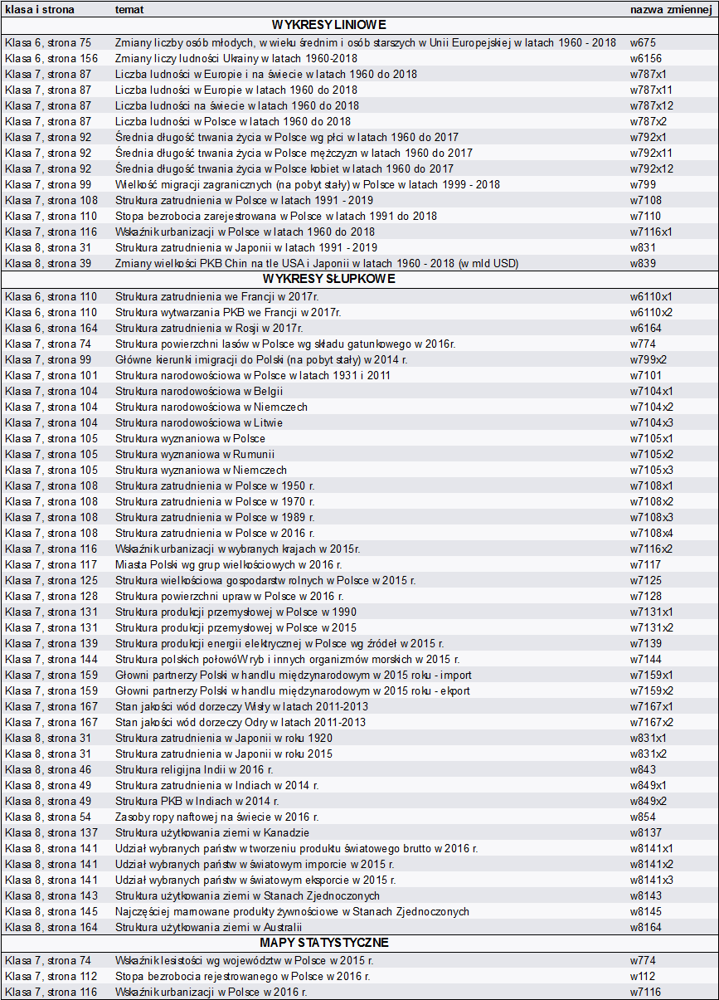

1111
Witryna Geowykresy umożliwia swobodny i darmowy dostęp do materiałów geograficznych, wykonanych na podstawie zamieszczonych w podręcznikach geografii „Planeta Nowa” wydawnictwa Nowej Ery wykresów i map statystycznych.
Materiały zostały zaktualizowane i zaprezentowane za pomocą wykresów liniowych, wykresów słupkowych oraz map statystycznych, przy użyciu oprogramowania RStudio. Wykorzystane dane pochodzą z World Banku i Banku Danych Lokalnych.
Zawarte pomoce dydaktyczne dostępne są na licencji Creative Commons, Uznanie Autorstwa 4.0 Polska CC-BY, co oznacza, iż pod warunkiem oznaczenia autora wolno je kopiować, rozprowadzać i przedstawiać.
Kod źródłowy pracy został umieszczony w formie repozytorium na serwisie Github pod adresem:
https://github.com/geowykresy/geowykresy.github.ioTabela poniżej przedstawia nazwę zmiennych wraz z tytułami, odpowiadających konkretnym mapom i wykresom zamieszczonym na stronie. W kodzie źródłowym istnieje możliwość sprawdzenia w jaki sposób zostały pobrane i zwizualizowne dane.
Strona powstała w ramach pracy inżynierskiej.